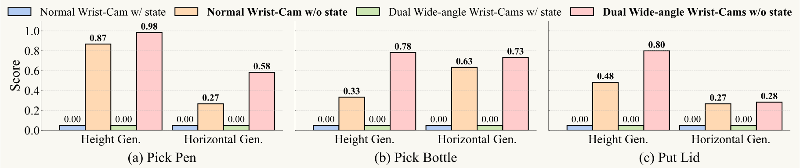

Do You Need Proprioceptive States
in Visuomotor Policies?
Juntu Zhao1,2*, Wenbo Lu2,4*, Di Zhang2,5,
Yufeng Liu1,2, Yushen Liang4, Tianluo Zhang4,
Yifeng Cao2,
Junyuan Xie2, Yingdong Hu2,3,
Shengjie Wang4, Junliang Guo2‡,
Dequan Wang1† and Yang Gao2,3†
* Equal Contribution
* This work was done during the internship at Spirit AI
† Corresponding authors
‡ Project leader
1 Shanghai Jiao Tong University,
2 Spirit AI,
3 Tsinghua University,
4 New York University Shanghai,
5 Tongji University.
Abstract -
Imitation-learning–based visuomotor policies have been widely used in robot manipulation, where both visual observations and proprioceptive states are typically adopted together for precise control. However, in this study, we find this common practice makes the policy overly reliant on the proprioceptive state input, which causes overfitting to the training trajectories and results in poor spatial generalization. On the contrary, we propose the State-free Policy, removing the proprioceptive state and predicting actions only conditioned on visual observations. The State-free Policy is built in the relative end-effector action space, and should ensure the full task-relevant visual observations, here provided by dual wide-angle wrist cameras. Empirical results demonstrate that the State-free policy achieves significantly stronger spatial generalization than the state-based policy: in real-world tasks such as pick-and-place, challenging shirt-folding, and complex whole-body manipulation, spanning multiple robot embodi- ments, the average success rate improves from 0% to 85% in height generalization and from 6% to 64% in horizontal generalization. Furthermore, they also show advantages in data efficiency and cross-embodiment adaptation, enhancing their practicality for real-world deployment.
Proprioceptive states provide direct and accurate robot configuration, but may act as shortcuts, where the policy directly associates absolute states with expert trajectories. Consequently, the policy tends to overfit to the training trajectories and fails to adapt to spatial layout changes. In this study, we propose the "State-free Policy", removing the state input from the visuomotor policiy, based on the relative EEF action space and full task observation. This improves the spatial generalization without requiring additional architectural changes or costly diverse data collection. At the same time, we further demonstrate that the State-free Policy also exhibit higher data efficiency and better cross-embodiment adaptation. Interestingly, we also find that removing the overhead camera can further enhance the policy's spatial generalization performance.
1. Pick and Place Tasks
We present that the State-free Policy achieves significantly stronger spatial generalization (both height and horizontal generalization) than the state-based policy across 3 real-world "Pick & Place" tasks:

State-based policy vs State-free policy
table height = 72 cm (out-of-domain)
State-based policy vs State-free policy
table height = 90 cm (out-of-domain)
State-based policy vs State-free policy
table height = 72 cm (out-of-domain)
State-based policy vs State-free policy
table height = 90 cm (out-of-domain)
2. More Challenging Tasks
We also evaluate the State-free Policy in horizontal generalization on more challenging tasks: "Fold Shirt" and "Fetch Bottle (whole-body)". The State-free Policy still shows significantly improved performance compared to the state-based policy.
| Task name |
Fold Shirt |
Fetch Bottle |
| w/ state (normal wrist-camera) |
0.183 |
0.117 |
| w/o state (normal wrist-camera) |
0.834 |
0.784 |
|
State-based policy vs State-free policy
moving both two arms 15 cm
State-based policy vs State-free policy
moving the fridge 10 cm
3. Data Efficiency
The state-based policy require diverse demonstrations to avoid overfitting to specific trajectories, greatly increasing the data collection cost.
But the State-free Policy is less prone to memorizing specific trajectories and can achieve comparable performance with fewer fine-tuning data.
We validate this on the in-domain "Pick Pen" task using dual wide-angle wrist-cameras, varying the fine-tuning data to 300, 200, 100, and 50 episodes, and measuring performance after 2 and 4 fine-tuning epochs.
The evaluation results show that reducing data causes the state-based policy to overfit and lose success, while the State-free Policy maintain much higher performance.
4. Cross-Embodiment Fine-Tuning
The State-free Policy also benefit cross-embodiment fine-tuning, as it avoids the issue of aligning with a new state space. We validate this on the in-domain "Fold Shirt" task using the human-like robot. Policies are first trained on dual-arm Arx5 and then adapted to a human-like dual-arm robot. The evaluation results show that the State-free Policy adapt much faster across embodiments, achieving substantially higher success rates than the state-based policy under the same fine-tuning epochs.
This indicates that the State-free Policy have better cross-embodiment ability than the state-based policy.
| State input |
Fine-tune 5k steps |
Fine-tune 10k steps |
| w/ state |
0.333 |
0.767 |
| w/o state |
0.700 |
0.967 |
|
5. Rethinking the Sensor Design
We find that removing the overhead camera can further enhance the policy's spatial generalization performance. We evaluate this through experiments on the "Pick Pen" task under 3 more challenging scenarios:
| Overhead camera input |
Table height 100 cm |
Raising pen holder height |
Moving pen holder 20 cm |
| w/ overhead cam |
0 |
0.467 |
0 |
| w/o overhead cam |
1.0 |
0.867 |
0.800 |
|
Without the overhead camera, table height = 100 cm
Without the overhead camera, double the pen holder height
Without the overhead camera, moving the pen holder for 20 cm
Results show that without the overhead camera, the policy achieve significantly higher success rates than that with the overhead camera.
This finding motivates us to rethink sensor design, perhaps removing the overhead camera, for future visuomotor policies.
6. Implementation Example
The State-free Policy can be easily integrated into existing visuomotor policies, requiring only the simple removal of proprioceptive state inputs from the model. For example, in the Lerobot platform's
π
0 policy:
class PI0FlowMatching(nn.Module):
# ... other class functions ...
def embed_suffix(self, state, noisy_actions, timestep):
# ... other processing ...
if self.use_state:
state_emb = self.state_proj(state)
embs.append(state_emb)
state_mask = torch.ones(bsize, nstates, dtype=torch.bool, device=device)
pad_masks.append(state_mask)
att_masks += [1]
# ... other processing ...
Conclusion
In this study, we propose State-free Policies, under two conditions: the relative end-effector (EEF) action space and full task observation through sufficiently comprehensive visual information.
Without state input, these policies maintain perfect in-domain performance while achieving significant improvements in spatial generalization.
State-free Policies also reduce the costly real-world data need, enable more efficient cross-embodiment adaptation, and inspire new directions in future sensor design.
Our findings shed new light on how State-free Policies can serve as a foundation for building more generalizable robotic learning systems.
BibTeX
@article{zhao2025nostate,
title={Do You Need Proprioceptive States in Visuomotor Policies?},
author={Juntu Zhao and Wenbo Lu and Di Zhang and Yufeng Liu and Yushen Liang and Tianluo Zhang and Yifeng Cao and Junyuan Xie and Yingdong Hu and Shengjie Wang and Junliang Guo and Dequan Wang and Yang Gao},
year={2025},
eprint={2509.18644},
archivePrefix={arXiv},
primaryClass={cs.RO},
url={https://arxiv.org/abs/2509.18644}
}